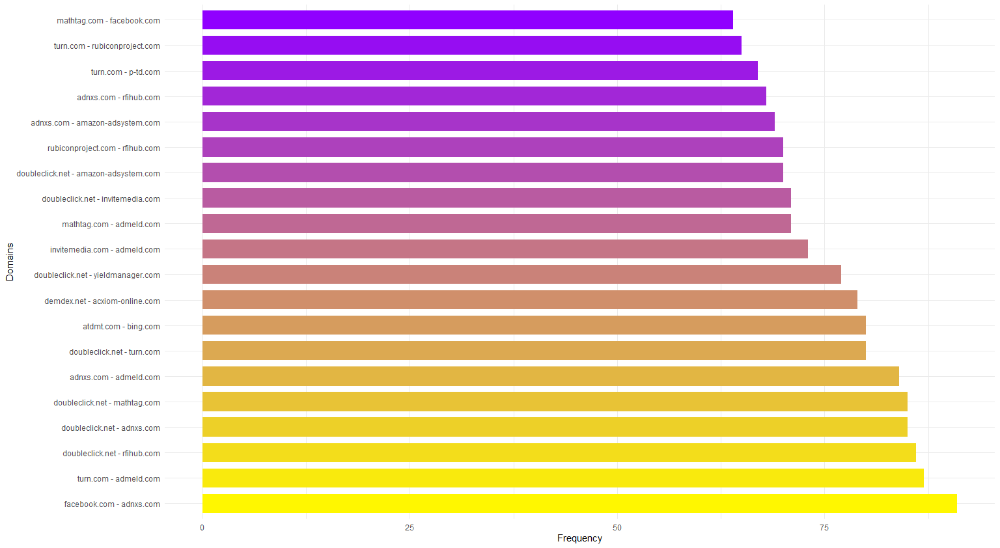

Online, you are under constant oversight from the websites that you visit. These websites collect information about you like your time zone, operating system, browser settings and extensions, and other pieces of information in the form of cookies. These pieces are information are often spread around to track you. As a result, it is very difficult to escape your past on the internet.
Here are some findings from research about your digital privacy:
- It would take an average person 244 hours per year to read all the privacy policies of the websites they visit (McDonald & Cranor, 2008).
- Privacy policies from 75 different websites were analyzed and found that the policies were often long, complex, and difficult to read. The policies used technical and legal language that was not easily understandable to the average person. (McDonald & Cranor, 2008).
- Many developers collect more data than necessary for the app's functionality, with some apps collecting more than 10 times the amount of data required. (Balebako et al., 2018).
- Another concerning finding was that many developers used insecure data storage methods, such as storing data in plain text, which can lead to data breaches and unauthorized access to user data. (Balebako et al., 2018).
Cookies
Cookies are small files containing a string of characters that a website stores on your computer or mobile device when you visit the site. Cookies allow websites to remember information about your visit, such as your preferences, login information, or items in your shopping cart.
Domain Pairs and the Frequency of Cookie Matching
The graph above shows the likelihood of cookie matching by pairs of websites. This means that when two websites have a cookie received from you, the graph shows the frequency of cookie matching completed by the two websites. Cookie matching is a process that allows different entities, such as publishers, advertisers, and data management platforms, to associate the same user across different websites or domains. It works by syncing information on a user's browser containing different cookies, such as first-party cookies created by a website and third-party cookies created by an advertiser. When a user visits a website that displays ads or third-party tracking tags, the browser sends these cookies to the ad server, which looks for matching cookies from other partners, allowing them to identify the same user. This enables advertisers to serve more relevant ads and improve targeting while allowing websites to earn more revenue from better click-through rates.